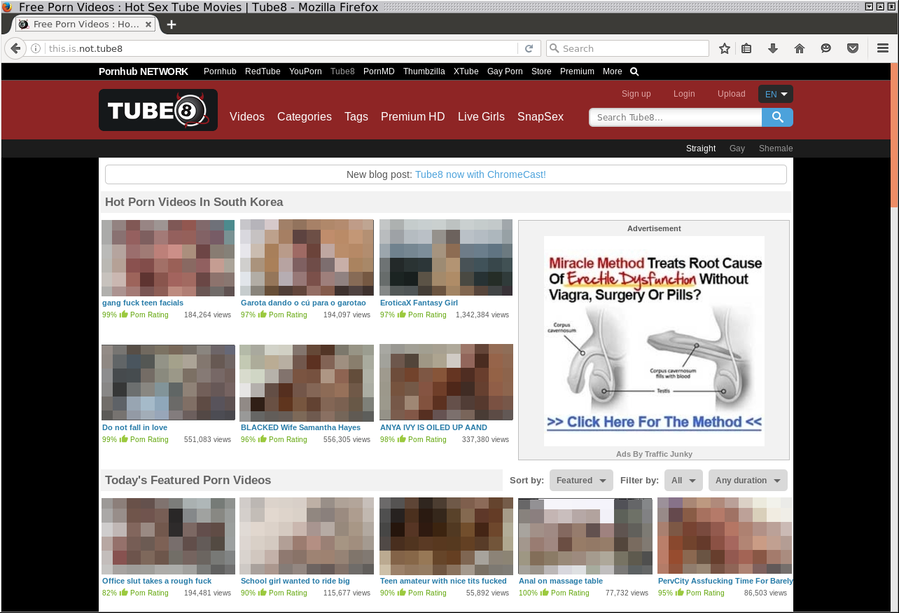
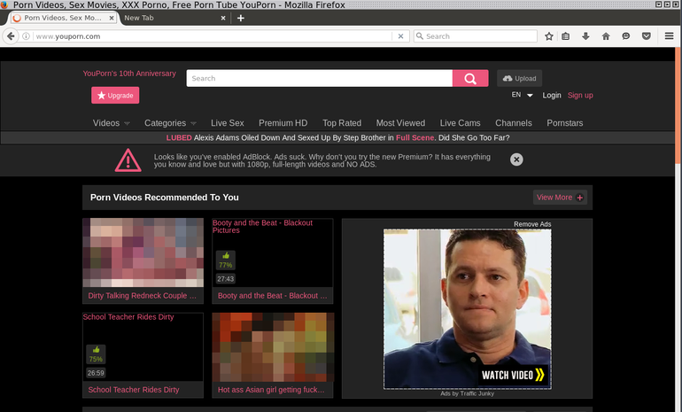

TL;DR: Please go directly to the Conclusion to discover how (in)effective the censorship of Internet in South Korea is. This blogpost can be served for you to remind how HTTP requests work.
Table of contents
0. Introduction
1. First contact with the censorship system
2. Locating the censorship system in the networks
3. Inner work of the censorship system
3.1. Different answers provided by censorship systems
3.1.1. Direct HTML as an answer
3.1.2. Direct HTML as an answer (censorship system A)
3.1.3. 302 Temporary redirect (censorship system B)
3.2. Brief analysis
3.3. Let's debug the censorship system - From HTTP/0.9 to HTTP/1.1
3.3.1. HTTP/0.9
3.3.2. HTTP/1.0
3.3.3. HTTP/1.1
3.4. Analysis
3.5 More tricky requests with HTTP
3.5.1. Custom Vhosts
3.5.2. HTTP requests methods
3.5.3. Having fun with HTTP/1.1 persistent connection
3.5.4. HTTP vs. HTTPS
3.5.5. Random behaviors provided by the censorship system
3.5.6. CDN for content (VOD/images)
3.5.7. HTTP2 for http URIs
3.5.8. WebSockets
3.5.9. HTTP2 for https URIs
3.5.10. Readline vs. buffered HTTP requests
4. Using HTTP proxies
5. IPv6
6. Bypassing the filter
6.1. By using a different vhost (easy-PoC)
6.2. By using HTTP persistent connection: HEAD then GET (PoC)
6.3. By using HTTP persistent connection: GET then GET (PoC)
6.4. By using \n instead of \r\n in the HTTP requests (unreliable method, PoC)
6.5. By using HTTP invalid methods (PoC)
6.6. By sending HTTP requests line by line (PoC)
6.7. By using a method ONLY if there is a censorship
6.8. By using a VPN
6.9. By using HTTPS websites/proxies
7. Conclusion
8. Credits and Greetings
9. Personal note to http://www.warning.or.kr/ administrator
10. License
0. Introduction
As staying in South Korea, I was curious and wanted to know more about the censorship as stated in Wikipedia.
Wikipedia: Censorship in South Korea:
KCSC (Korea Communications Standards Commission) is responsible for online control and requires Korean citizens to enter government issued ID numbers in order to post political comments online. The KCSC has the right to suspend or delete any web posting or articles for 30 days as soon as a complaint is filed (to combat cyberbullying in South Korea). Every week, portions of the Korean web are taken down by the KCSC. In 2013, around 23,000 Korean webpages were deleted and another 63,000 blocked by the KCSC.
Korean officials' rhetoric about censored material, including that it is "subversive", "illegal", "harmful" or related to "pornography and nudity", has been noted as similar to that of their Chinese counterparts. Critics also say that the government takes prohibitions on profanity as "a convenient excuse to silence critics" and chill speech.
This designation persisted in 2012, where the report suggests South Korea's censorship is similar to those of Russia and Egypt.
You may have seen the infamous message "This webpage is illegal" when you try to get into some websites. By the way, if you don't speak Korean, I wish you a good luck trying to copy/paste texts from an image and understand what is going on:
Wikipedia lists a short list of websites forbidden to visit in South Korea, but I used https://github.com/aredo/porn-site-list/blob/master/sites.json to get a list of potentially banned websites (a lot of them are actually blocked) in South Korea.
As you see, quite a large number of websites are currently blocked. They include the websites that are considered containing "socially harmful" or subversive contents such as adult or gambling websites as well as political matters notably related to North Korea. Social medias are very much censored too (online comments are massively removed).
This research excludes any politically sensitive items as this analysis is intended to be limited to a technical side and I am not making any political judgment. I am trying, from an external point of view, to evaluate the technical level of the current censorship system. Social medias are out of scope of this analysis.
This study was done in September 2016 using 3 major ISPs: KT, SK Telecom (SKT) and LG U+.
1. First contact with the censorship system
We will use telnet to understand how the censorship system works.
If you go on a censored website, you will see this webpage:

Let's dig:
A standard (and very basic) HTTP request is:
GET / HTTP/1.1
Host: www.remote-server.com\r\n\r\n
Trying this on a censored website:
user@kali:~$ telnet xhamster.com 80
Trying 88.208.29.24...
Connected to www.xhamster.com.
Escape character is '^]'.
GET / HTTP/1.1
Host: xhamster.com
HTTP/1.0 302 Redirect
Location: http://www.warning.or.kr
user@kali:~$
By changing the Host value to a banned website, it seems we can trigger the censorship system:
user@kali:~$ telnet xhamster.com 80
Trying 88.208.29.24...
Connected to www.xhamster.com.
Escape character is '^]'.
GET / HTTP/1.1
Host: wutwut
HTTP/1.1 301 Moved Permanently
Server: nginx
Date: Fri, 01 Oct 2016 00:00:00 GMT
Content-Type: text/html; charset=UTF-8
Transfer-Encoding: chunked
Connection: keep-alive
Location: http://xhamster.com/
user@kali:~$
This request seems to work and the Nginx server from xhamster.com will reply to us. So, at least, the censorship system is analyzing the Host header in the HTTP request.
2. Locating the censorship system in the networks
We will use wget to customize the request in order to understand where is the filtering process.
We ask the Google.ru webpage (note: I made a configuration to ensure www.google.ru resolves to a Google server not located in South Korea. 216.58.214.131 is located in Europe).
I, then, will use Google servers located in South Korea to see if the censorship is really analyzing every Host header on every HTTP connection or only targeting a few IPs.
We will eventually determine where this censorship system is located.
We are doing a name resolution to get a Google server outside South Korea:
user@kali:~$ host google.ru 8.8.8.8
Using domain server:
Name: 8.8.8.8
Address: 8.8.8.8#53
Aliases:
google.ru has address 216.58.197.227
google.ru has IPv6 address 2404:6800:4005:802::2003
google.ru mail is handled by 50 alt4.aspmx.l.google.com.
google.ru mail is handled by 30 alt2.aspmx.l.google.com.
google.ru mail is handled by 20 alt1.aspmx.l.google.com.
google.ru mail is handled by 10 aspmx.l.google.com.
google.ru mail is handled by 40 alt3.aspmx.l.google.com.
user@kali:~$
user@kali:~$ traceroute -n 216.58.197.227
traceroute to 216.58.197.227 (216.58.197.227), 30 hops max, 60 byte packets
1 100.114.55.252 3.915 ms 4.052 ms 4.495 ms
2 100.114.27.169 4.503 ms 4.498 ms 4.495 ms
3 1.255.24.48 4.806 ms 5.027 ms 5.026 ms
4 61.98.54.109 5.380 ms 5.376 ms 5.372 ms
5 58.229.4.16 7.384 ms 58.229.4.12 13.247 ms 58.229.4.8 10.801 ms
6 118.221.7.46 9.586 ms 5.669 ms 5.596 ms
7 39.115.132.69 5.062 ms 58.229.15.213 5.038 ms 39.115.132.69 5.030 ms
8 72.14.216.77 41.280 ms 72.14.215.199 38.651 ms 38.296 ms
9 216.239.54.1 39.183 ms 39.033 ms 209.85.142.95 38.461 ms
10 209.85.142.185 43.401 ms 216.239.40.11 43.397 ms 209.85.142.185 40.657 ms
11 72.14.238.35 64.533 ms 216.58.197.227 36.478 ms 37.243 ms
user@kali:~$
Google.ru resolves to a foreign IP which is far away.
Ok let's debug:
user@kali:~$ wget -O- http://www.google.ru/ | grep -ai google|head -n 1
--2016-10-01 XX:XX:XX-- http://www.google.ru/
Resolving www.google.ru (www.google.ru)... 216.58.214.131, 2a00:1450:4001:813::2003
Connecting to www.google.ru (www.google.ru)|216.58.214.131|:80... connected.
HTTP request sent, awaiting response... 200 OK
Length: unspecified [text/html]
Saving to: 'STDOUT'
<!doctype html><html itemscope="" itemtype="http://schema.org/WebPage" lang="ru"><head><meta content="Google." name="description"><meta content="noodp" name="robots"><meta content="text/html; charset=UTF-8" http-equiv="Content-Type"><meta content="/images/branding/googleg/1x/googleg_standard_color_128dp.png" itemprop="image"><title>Google</title><script>(function(){window.google={kEI:'9kbBV4mEM8nt0gSfvbGQCg',kEXPI:'3700062,3700283,3700389,4029815,4031109,4032678,4036509,4036527,4038012,4039268,4043492,4045841,4048347,4052304,4058543,4061154,4062702,4063879,4065786,4065793,4066654,4066708,4067175,4067860,4068550,4068816,4069839,4069841,4069905,4070127,4070220,4070598,4071231,4071575,4071603,4071842,4072000,4072289,4072364,4072653,4072682,4072773,4073231,4073405,4073419,4073958,4073980,4074426,4074801,4075122,4075451,4075464,4075781,4075788,4075860,4075966,4075976,4076018,4076096,4076115,4076117,4076797,4076931,4077219,4077221,4077384,4077391,8300096,8300273,8502184,8503585,8504846,8505150,8505152,8505585,8505677,8505816,8506585,10200083',authuser:0,kscs:'c9c918f0_24'};google.kHL='ru';})();(function(){google.lc=[];google.li=0;google.getEI=function(a){for(var b;a&&(!a.getAttribute||!(b=a.getAttribute("eid")));)a=a.parentNode;return b||google.kEI};google.getLEI=function(a){for(var b=null;a&&(!a.getAttribute||!(b=a.getAttribute("leid")));)a=a.parentNode;return b};google.https=function(){return"https:"==window.location.protocol};google.ml=function(){return null};google.wl=function(a,b){try{google.ml(Error(a),!1,b)}catch(c){}};google.time=function(){return(new Date).getTime()};google.log=function(a,b,c,e,g){a=google.logUrl(a,b,c,e,g);if(""!=a){b=new Image;var d=google.lc,f=google.li;d[f]=b;b.onerror=b.onload=b.onabort=function(){delete d[f]};window.google&&window.google.vel&&window.google.vel.lu&&window.google.vel.lu(a);b.src=a;google.li=f+1}};google.logUrl=function(a,b,c,e,g){var d="",f=google.ls||"";if(!c&&-1==b.search("&ei=")){var h=google.getEI(e)
user@kali:~$
Yeah! We can access to Google.
Now, question: Does it work when we try to contact Google server in South Korea? (1.255.22.242 is an IP for www.google.co.kr, located in South Korea, as shown below):
Google inside Korean IP space:
user@kali:~$ host google.co.kr
google.co.kr has address 1.255.22.241
google.co.kr has address 1.255.22.237
google.co.kr has address 1.255.22.217
google.co.kr has address 1.255.22.216
google.co.kr has address 1.255.22.227
google.co.kr has address 1.255.22.251
google.co.kr has address 1.255.22.242
google.co.kr has address 1.255.22.232
google.co.kr has address 1.255.22.226
google.co.kr has address 1.255.22.247
google.co.kr has address 1.255.22.236
google.co.kr has address 1.255.22.222
google.co.kr has address 1.255.22.221
google.co.kr has address 1.255.22.212
google.co.kr has address 1.255.22.231
google.co.kr has address 1.255.22.246
google.co.kr has IPv6 address 2404:6800:400a:806::2003
google.co.kr mail is handled by 10 aspmx.l.google.com.
google.co.kr mail is handled by 40 alt3.aspmx.l.google.com.
google.co.kr mail is handled by 20 alt1.aspmx.l.google.com.
google.co.kr mail is handled by 50 alt4.aspmx.l.google.com.
google.co.kr mail is handled by 30 alt2.aspmx.l.google.com.
user@kali:~$ tcptraceroute -n 1.255.22.242 80
Running:
traceroute -T -O info -n -p 80 1.255.22.242
traceroute to 1.255.22.242 (1.255.22.242), 30 hops max, 60 byte packets
1 100.114.55.252 3.759 ms 4.431 ms 4.556 ms
2 100.114.27.169 4.553 ms 4.551 ms 4.547 ms
3 1.255.24.48 5.182 ms 5.668 ms 5.900 ms
4 61.98.54.109 5.900 ms 6.452 ms 6.992 ms
5 58.229.4.28 10.786 ms 58.229.4.20 12.408 ms 58.229.4.36 10.783 ms
6 58.229.4.163 10.713 ms 7.037 ms 7.370 ms
7 1.255.22.242<syn,ack> 6.621 ms 7.737 ms 7.798 ms
user@kali:~$ ping 1.255.22.242
PING 1.255.22.242 (1.255.22.242) 56(84) bytes of data.
64 bytes from 1.255.22.242: icmp_seq=1 ttl=58 time=4.32 ms
^C
--- 1.255.22.242 ping statistics ---
1 packets transmitted, 1 received, 0% packet loss, time 0ms
rtt min/avg/max/mdev = 4.328/4.328/4.328/0.000 ms
user@kali:~$
4.32ms to contact 1.255.22.242! - this IP is located in South Korea (and whois 1.255.22.242 will confirm it - SK Broadband Co Ltd).
Fetching a webpage located at 1.255.22.242:
user@kali:~$ wget -O- http://1.255.22.242/ >/dev/null
--2016-10-01XX:XX:XX-- http://1.255.22.242/
Connecting to 1.255.22.242:80... connected.
HTTP request sent, awaiting response... 301 Moved Permanently
Location: http://www.google.com/ [following]
--2016-10-01 XX:XX:XX-- http://www.google.com/
Resolving www.google.com (www.google.com)... 74.125.203.103, 74.125.203.105, 74.125.203.106, ...
Connecting to www.google.com (www.google.com)|74.125.203.103|:80... connected.
HTTP request sent, awaiting response... 302 Found
Location: http://www.google.co.kr/?gfe_rd=cr&ei=n3nCV9PEPM-T9QWY36ywCg [following]
--2016-10-01 XX:XX:XX-- http://www.google.co.kr/?gfe_rd=cr&ei=n3nCV9PEPM-T9QWY36ywCg
Resolving www.google.co.kr (www.google.co.kr)... 74.125.23.94, 2404:6800:4008:c01::5e
Connecting to www.google.co.kr (www.google.co.kr)|74.125.23.94|:80... connected.
HTTP request sent, awaiting response... 200 OK
Length: unspecified [text/html]
Saving to: 'STDOUT'
- [ <=>] 10.78K --.-KB/s in 0.001s
2016-10-01 XX:XX:XX (7.03 MB/s) - written to stdout [11040]
The default webpage will give us a 302 Redirect to http://www.google.co.kr/.
We can access to Google servers located in South Korea too!
Now, we know that browsing the www.xhamster.com webpage will show the warning.or.kr webpage from the first part.
We can forge the Host header in the HTTP request to understand where the censorship system is located.
Asking a Google webpage on a Google server located outside South Korea with a custom header with a banned Host (Host: www.xhamster.com):
user@kali:~$ wget -O- --header="Host: www.xhamster.com" http://www.google.ru/
--2016-10-01XX:XX:XX-- http://www.google.ru/
Resolving www.google.ru (www.google.ru)... 216.58.214.131, 2a00:1450:4001:813::2003
Connecting to www.google.ru (www.google.ru)|216.58.214.131|:80... connected.
HTTP request sent, awaiting response... 302 Redirect
Location: http://www.warning.or.kr [following]
--2016-10-01 XX:XX:XX-- http://www.warning.or.kr/
Resolving www.warning.or.kr (www.warning.or.kr)... 121.189.57.82
Connecting to www.warning.or.kr (www.warning.or.kr)|121.189.57.82|:80... connected.
HTTP request sent, awaiting response... 200 OK
Length: 10590 (10K) [text/html]
Saving to: 'STDOUT'
- 0%[ ] 0 --.-KB/s <html>
<head>
<meta http-equiv="Content-Type" content="text/html; charset=utf-8">
<meta name="kcsc" content="blocking" />
<title>www.warning.or.kr</title>
<style type="text/css">
[...]
user@kali:~$
This request is blocked (see the 302 direction to http://www.warning.or.kr/).
As seen before, we have access to Google servers located inside and outside South Korea.
If I try to contact a Google server located outside South Korea and ask for a custom censored host, then the request seems to be censored.
However, if I ask a Google server located in South Korea to provide me with a banned website, this request will work and Google will provide a reply, as shown below.
Asking www.xhamster.com on a Google Korean Server will result a 404 page from Google (that is, this request is NOT blocked by the censorship system):
user@kali:~$ wget -O- --header="Host: www.xhamster.com" http://1.255.22.242/
--2016-10-01XX:XX:XX-- http://1.255.22.242/
Connecting to 1.255.22.242:80... connected.
HTTP request sent, awaiting response... 404 Not Found
2016-10-01 XX:XX:XX ERROR 404: Not Found.
user@kali:~$
Using telnet for the same request (in HTTP/1.0):
user@kali:~$ telnet 1.255.22.242 80
Trying 1.255.22.242...
Connected to 1.255.22.242.
Escape character is '^]'.
GET / HTTP/1.0
Host: www.xhamster.com
HTTP/1.0 404 Not Found
Content-Type: text/html; charset=UTF-8
Content-Length: 1561
Date: Fri, 01 Oct 2016 00:00:00 GMT
<!DOCTYPE html>
<html lang=en>
<meta charset=utf-8>
<meta name=viewport content="initial-scale=1, minimum-scale=1, width=device-width">
<title>Error 404 (Not Found)!!1</title>
<style>
*{margin:0;padding:0}html,code{font:15px/22px arial,sans-serif}html{background:#fff;color:#222;padding:15px}body{margin:7% auto 0;max-width:390px;min-height:180px;padding:30px 0 15px}* > body{background:url(//www.google.com/images/errors/robot.png) 100% 5px no-repeat;padding-right:205px}p{margin:11px 0 22px;overflow:hidden}ins{color:#777;text-decoration:none}a img{border:0}@media screen and (max-width:772px){body{background:none;margin-top:0;max-width:none;padding-right:0}}#logo{background:url(//www.google.com/images/branding/googlelogo/1x/googlelogo_color_150x54dp.png) no-repeat;margin-left:-5px}@media only screen and (min-resolution:192dpi){#logo{background:url(//www.google.com/images/branding/googlelogo/2x/googlelogo_color_150x54dp.png) no-repeat 0% 0%/100% 100%;-moz-border-image:url(//www.google.com/images/branding/googlelogo/2x/googlelogo_color_150x54dp.png) 0}}@media only screen and (-webkit-min-device-pixel-ratio:2){#logo{background:url(//www.google.com/images/branding/googlelogo/2x/googlelogo_color_150x54dp.png) no-repeat;-webkit-background-size:100% 100%}}#logo{display:inline-block;height:54px;width:150px}
</style>
<a href=//www.google.com/><span id=logo aria-label=Google></span></a>
<p><b>404.</b><ins>That's an error.</ins>
<p>The requested URL <code>/</code> was not found on this server. <ins>That's all we know.</ins>
Connection closed by foreign host.
user@kali:~$
But asking www.xhamster.com on a foreign server will result a 302 redirect to www.warning.or.kr:
user@kali:~$ wget -O- --header="Host: www.xhamster.com" http://www.google.com/
--2016-10-01XX:XX:XX-- http://www.google.com/
Resolving www.google.com (www.google.com)... 64.233.188.94, 2404:6800:4005:800::2003
Connecting to www.google.com (www.google.com)|64.233.188.94|:80... connected.
HTTP request sent, awaiting response... 302 Redirect
Location: http://www.warning.or.kr [following]
--2016-10-01 XX:XX:XX-- http://www.warning.or.kr/
Resolving www.warning.or.kr (www.warning.or.kr)... ^C
user@kali:~$
From this, we can assume the filtering system only targets HTTP connections from international links.
Let's do a traceroute and a TCPtraceroute to find out what is happening.
Using SKT connections, UDP traceroute to www.xhamster.com:
user@kali:~$ traceroute www.xhamster.com
traceroute to www.xhamster.com (88.208.29.24), 30 hops max, 60 byte packets
1 100.114.55.252 (100.114.55.252) 2.803 ms 3.910 ms 4.871 ms
2 100.114.27.169 (100.114.27.169) 4.863 ms 5.679 ms 6.116 ms
3 1.255.24.48 (1.255.24.48) 6.121 ms 6.611 ms 7.979 ms
4 61.98.54.109 (61.98.54.109) 8.227 ms 8.713 ms 8.709 ms
5 58.229.4.32 (58.229.4.32) 9.056 ms 58.229.4.12 (58.229.4.12) 15.861 ms 15.868 ms
6 118.221.7.34 (118.221.7.34) 13.865 ms 6.821 ms 1.255.26.242 (1.255.26.242) 7.892 ms
7 58.229.14.9 (58.229.14.9) 164.852 ms 162.677 ms 164.854 ms
8 iptp.as41095.any2ix.coresite.com (206.72.210.118) 159.382 ms 159.961 ms 165.059 ms
9 be2.r0.r328.nkf.ams.nl.iptp.net (91.194.117.128) 326.743 ms 328.153 ms 327.627 ms
10 be101.r0.r328.nkf.ams.nl.iptp.net (176.56.179.130) 324.799 ms be100.r0.r328.nkf.ams.nl.iptp.net (176.56.179.128) 328.517 ms be101.r0.r328.nkf.ams.nl.iptp.net (176.56.179.130) 325.047 ms
11 * * *
12 * * *
13 * * *
[...]
user@kali:~$
Now doing a TCPtraceroute to www.xhamster.com on port 80 shows something fishy:
user@kali:~$ tcptraceroute www.xhamster.com 80
Running:
traceroute -T -O info -p 80 www.xhamster.com
traceroute to www.xhamster.com (88.208.29.24), 30 hops max, 60 byte packets
1 100.114.55.252 (100.114.55.252) 5.047 ms 5.730 ms 6.041 ms
2 100.114.27.169 (100.114.27.169) 6.050 ms 6.047 ms 8.086 ms
3 1.255.24.48 (1.255.24.48) 8.099 ms 8.097 ms 8.092 ms
4 61.98.54.109 (61.98.54.109) 8.090 ms 8.086 ms 8.082 ms
5 58.229.4.12 (58.229.4.12) 8.079 ms 58.229.4.20 (58.229.4.20) 8.698 ms 58.229.4.12 (58.229.4.12) 14.548 ms
6 118.221.7.46 (118.221.7.46) 9.524 ms 118.221.7.26 (118.221.7.26) 7.158 ms 1.255.26.242 (1.255.26.242) 5.676 ms
7 39.115.132.234 (39.115.132.234) 6.989 ms 5.656 ms 6.988 ms
8 * * *
9 * * *
10 192.168.112.1 (192.168.112.1) 13.741 ms 14.491 ms 16.793 ms
11 39.115.132.233 (39.115.132.233) 6.942 ms 6.935 ms 5.209 ms
12 58.229.14.9 (58.229.14.9) 312.169 ms 312.143 ms 312.145 ms
13 iptp.as41095.any2ix.coresite.com (206.72.210.118) 312.111 ms 307.172 ms 309.766 ms
14 be2.r0.r328.nkf.ams.nl.iptp.net (91.194.117.128) 337.794 ms 337.775 ms 337.779 ms
15 be100.r0.r328.nkf.ams.nl.iptp.net (176.56.179.128) 337.777 ms 337.775 ms be101.r0.r328.nkf.ams.nl.iptp.net (176.56.179.130) 329.002 ms
16 88.208.29.24 (88.208.29.24) <syn,ack> 317.332 ms 312.113 ms 312.082 ms
user@kali:~$
The hop number 10 shows a RCF1918 IP (192.168.112.1) only when doing a traceroute using TCP.
Let's target another website (www.ovh.com, a big European ISP):
user@kali:~$ tcptraceroute www.ovh.com 80
Running:
traceroute -T -O info -p 80 www.ovh.com
traceroute to www.ovh.com (198.27.92.1), 30 hops max, 60 byte packets
1 100.114.55.252 (100.114.55.252) 1.750 ms 1.996 ms 2.272 ms
2 100.114.27.169 (100.114.27.169) 3.064 ms 3.070 ms 3.067 ms
3 1.255.24.48 (1.255.24.48) 12.399 ms 13.106 ms 13.552 ms
4 61.98.54.109 (61.98.54.109) 4.066 ms 4.321 ms 4.568 ms
5 58.229.4.8 (58.229.4.8) 6.992 ms 6.999 ms 58.229.4.20 (58.229.4.20) 5.160 ms
6 1.255.26.254 (1.255.26.254) 6.987 ms 118.221.7.42 (118.221.7.42) 5.064 ms 118.221.7.70 (118.221.7.70) 7.499 ms
7 39.115.132.238 (39.115.132.238) 7.452 ms 7.457 ms 7.454 ms
8 * * *
9 * * *
10 192.168.112.1 (192.168.112.1) 7.414 ms 192.168.132.1 (192.168.132.1) 7.410 ms 7.407 ms
11 39.115.132.237 (39.115.132.237) 7.843 ms 7.824 ms 6.593 ms
12 39.115.132.90 (39.115.132.90) 60.029 ms 210.180.97.9 (210.180.97.9) 58.820 ms 59.904 ms
13 * * *
14 be1-1170.sbg-g1-a9.fr.eu (37.187.232.86) 308.407 ms 308.406 ms 308.404 ms
15 * po99-1123.mil-5-6k.it.eu (91.121.131.149) 308.365 ms po97-1122.mil-5-6k.it.eu (91.121.131.147) 308.171 ms
16 www.ovh.com (198.27.92.1) <syn,ack> 308.370 ms * 308.316 ms
user@kali:~$
192.168.112.1 is present (but it's NOT present if we do ICMP/UDP traceroutes).
Another TCPtraceroute will show a suspicious 192.168.132.1 in hop 10 (in a different date):
user@kali:~$ tcptraceroute www.ovh.com 80
Running:
traceroute -T -O info -p 80 www.ovh.com
traceroute to www.ovh.com (198.27.92.1), 30 hops max, 60 byte packets
1 100.114.55.252 (100.114.55.252) 1.611 ms 2.138 ms 2.676 ms
2 100.114.27.169 (100.114.27.169) 2.690 ms 2.677 ms 2.674 ms
3 1.255.24.48 (1.255.24.48) 2.833 ms 3.128 ms 3.419 ms
4 61.98.54.109 (61.98.54.109) 3.427 ms 3.420 ms 3.414 ms
5 58.229.4.20 (58.229.4.20) 3.982 ms 58.229.4.16 (58.229.4.16) 5.237 ms 5.247 ms
6 118.221.7.70 (118.221.7.70) 5.666 ms 6.473 ms 4.136 ms
7 39.115.132.238 (39.115.132.238) 5.232 ms 5.449 ms 5.450 ms
8 * * *
9 * * *
10 192.168.132.1 (192.168.132.1) 5.971 ms 5.373 ms 4.869 ms
11 39.115.132.237 (39.115.132.237) 7.897 ms 39.115.132.233 (39.115.132.233) 5.352 ms 39.115.132.237 (39.115.132.237) 7.870 ms
12 39.115.132.90 (39.115.132.90) 60.661 ms 59.833 ms 59.790 ms
13 * * *
14 be1-1170.sbg-g1-a9.fr.eu (37.187.232.86) 307.206 ms 307.098 ms 308.245 ms
15 * * *
16 www.ovh.com (198.27.92.1) <syn,ack> 306.193 ms 306.008 ms 307.063 ms
With KT, sometimes, a strange hop will appear when doing a TCP traceroute, as shown below (hop 11):
user@kali:~$ tcptraceroute 216.58.197.227
Running:
traceroute -T -O info -p 80 216.58.197.227
traceroute to 216.58.197.227 (216.58.197.227), 30 hops max, 60 byte packets
1 gateway (172.30.1.254) 1.196 ms 1.197 ms 1.225 ms
2 115.21.98.254 (115.21.98.254) 5.727 ms 7.883 ms 7.901 ms
3 119.196.200.157 (119.196.200.157) 5.700 ms 7.305 ms 8.944 ms
4 112.190.16.37 (112.190.16.37) 5.655 ms 6.549 ms 10.649 ms
5 112.190.2.93 (112.190.2.93) 18.086 ms 18.105 ms 18.104 ms
6 112.174.125.137 (112.174.125.137) 16.063 ms 3.217 ms 3.205 ms
7 112.174.48.202 (112.174.48.202) 2.385 ms 4.605 ms 4.584 ms
8 112.174.31.154 (112.174.31.154) 4.540 ms 6.182 ms 112.174.31.146 (112.174.31.146) 7.205 ms
9 * * *
10 * * *
11 192.168.144.1 (192.168.144.1) 2.568 ms 2.587 ms 2.577 ms
12 112.174.31.189 (112.174.31.189) 3.301 ms 112.174.31.177 (112.174.31.177) 5.663 ms 112.174.31.25 (112.174.31.25) 15.977 ms
13 112.174.84.186 (112.174.84.186) 15.926 ms 112.174.84.58 (112.174.84.58) 15.946 ms 112.174.83.58 (112.174.83.58) 15.937 ms
14 72.14.194.194 (72.14.194.194) 46.967 ms 47.023 ms 52.190 ms
15 209.85.142.95 (209.85.142.95) 48.218 ms 216.239.54.1 (216.239.54.1) 48.857 ms 209.85.142.95 (209.85.142.95) 48.220 ms
16 72.14.237.223 (72.14.237.223) 38.998 ms 72.14.238.99 (72.14.238.99) 41.599 ms 45.584 ms
17 nrt13s49-in-f3.1e100.net (216.58.197.227) <syn,ack> 41.301 ms 41.277 ms 33.900 ms
And the UDP traceroute:
user@kali:~$ traceroute 216.58.197.227
traceroute to 216.58.197.227 (216.58.197.227), 30 hops max, 60 byte packets
1 gateway (172.30.1.254) 2.500 ms 2.563 ms 4.136 ms
2 115.21.98.254 (115.21.98.254) 7.673 ms 9.465 ms 9.461 ms
3 119.196.200.157 (119.196.200.157) 8.254 ms 9.429 ms 10.889 ms
4 112.190.16.37 (112.190.16.37) 7.591 ms 8.242 ms 8.762 ms
5 112.190.2.93 (112.190.2.93) 12.834 ms 12.849 ms 12.847 ms
6 112.174.125.137 (112.174.125.137) 14.237 ms 4.237 ms 3.832 ms
7 112.174.48.202 (112.174.48.202) 2.976 ms 2.971 ms 2.968 ms
8 112.174.84.22 (112.174.84.22) 2.921 ms 112.174.84.58 (112.174.84.58) 3.792 ms 3.791 ms
9 72.14.194.194 (72.14.194.194) 34.562 ms 35.805 ms 35.211 ms
10 209.85.142.95 (209.85.142.95) 36.480 ms 216.239.54.1 (216.239.54.1) 35.262 ms 209.85.142.95 (209.85.142.95) 37.717 ms
11 72.14.237.223 (72.14.237.223) 35.233 ms 35.211 ms 35.202 ms
12 nrt13s49-in-f227.1e100.net (216.58.197.227) 38.470 ms 34.080 ms 39.364 ms
If you read the TCPtraceroutes, you will see a hop located in the edge of the Korean network (hop10 or 11): 192.168.112.1 or 192.168.132.1 or 192.168.144.1. This router doesn't appear when doing UDP or ICMP traceroutes.
When doing tcptraceroute to exotic remote ports (61721), this hop doesn't appear. In fact, this hop appears only for a list of specific ports (80, 8080, 8000, 2222, ...) but the censorship seems to affect every TCP connection.
Note: This hop appears not every time when using KT or LG U+ connection (but they are still censoring Internet connection). It means that the 2 ISPs are using different methods to censor websites or the censorship system has different network behaviors.
You can test filtering by yourself with these wget commands, by contacting a remote server and asking to serve HTTP webpages:
Connecting to ftp.de.freebsd.org and asking HTTP on a FTP server will result errors from the FTP server (which is normal):
user@kali:~$ wget -O- http://ftp.de.freebsd.org:21/
--2016-10-01 XX:XX:XX-- http://ftp.de.freebsd.org:21/
Resolving ftp.de.freebsd.org (ftp.de.freebsd.org)... 213.83.42.56, 2a02:2e0:11:a00::10
Connecting to ftp.de.freebsd.org (ftp.de.freebsd.org)|213.83.42.56|:21... connected.
HTTP request sent, awaiting response... 200 No headers, assuming HTTP/0.9
Length: unspecified
Saving to: 'STDOUT'
- [<=> ] 0 --.-KB/s 220 FTP Server ready.
500 GET not understood
500 USER-AGENT: not understood
500 ACCEPT: not understood
500 ACCEPT-ENCODING: not understood
500 HOST: not understood
500 CONNECTION: not understood
500 Invalid command: try being more creative
^C
user@kali:~$
Now connecting to the same FTP server and providing a Host: www.xhamster.com with the HTTP request will send us a HTTP reply by the censorship system:
user@kali:~$ wget --header="Host: www.xhamster.com" -O- http://ftp.de.freebsd.org:21/
--2016-10-01 XX:XX:XX-- http://ftp.de.freebsd.org:21/
Resolving ftp.de.freebsd.org (ftp.de.freebsd.org)... 213.83.42.56, 2a02:2e0:11:a00::10
Connecting to ftp.de.freebsd.org (ftp.de.freebsd.org)|213.83.42.56|:21... connected.
HTTP request sent, awaiting response... 200 OK
Length: unspecified [text/html]
Saving to: 'STDOUT'
- [<=> ] 0 --.-KB/s <html><script>
var arg = "http://warning.or.kr";
var str = new Array();
str = arg.split("&", 1);
var a = new Array();
a = str[0].split("=");
var b = Math.floor(a[1] / 100);
var c = new Array();
if(b == 10){location.replace("http://www.naver.com");}
else if(b == 20){location.replace("http://www.daum.net");}
else if(b == 30){location.replace("http://www.paran.com");}
else{ c = a[0].split("?");
location.replace(c[0]);}
</script></html>
- [ <=> ] 437 --.-KB/s in 0s
2016-10-01 XX:XX:XX (13.5 MB/s) - written to stdout [437]
user@kali:~$
Same with SSH:
We see the SSH banner on ftp.de.freebsd.org using telnet:
user@kali:~$ telnet ftp.de.freebsd.org 22
Trying 213.83.42.56...
Connected to ftp.plusline.de.
Escape character is '^]'.
SSH-2.0-OpenSSH_5.3
^]
telnet> q
Connection closed.
user@kali:~$
Now sending an http request to the sshd server of ftp.de.freebsd.org with a censored Host will trigger the censorship:
user@kali:~$ wget --header="Host: www.xhamster.com" -O- http://ftp.de.freebsd.org:22/
--2016-10-01 XX:XX:XX-- http://ftp.de.freebsd.org:22/
Resolving ftp.de.freebsd.org (ftp.de.freebsd.org)... 213.83.42.56, 2a02:2e0:11:a00::10
Connecting to ftp.de.freebsd.org (ftp.de.freebsd.org)|213.83.42.56|:22... connected.
HTTP request sent, awaiting response... 200 OK
Length: unspecified [text/html]
Saving to: 'STDOUT'
- [<=> ] 0 --.-KB/s <html><script>
var arg = "http://warning.or.kr";
var str = new Array();
str = arg.split("&", 1);
var a = new Array();
a = str[0].split("=");
var b = Math.floor(a[1] / 100);
var c = new Array();
if(b == 10){location.replace("http://www.naver.com");}
else if(b == 20){location.replace("http://www.daum.net");}
else if(b == 30){location.replace("http://www.paran.com");}
else{ c = a[0].split("?");
location.replace(c[0]);}
</script></html>
- [ <=> ] 437 --.-KB/s in 0s
2016-10-01 XX:XX:XX (37.8 MB/s) - written to stdout [437]
FTP.DE.FREEBSD.ORG has other interesting ports, like rsync:
Sending http requests to open TCP ports (873/tcp [rsync] and 5666/tcp) on ftp.de.freebsd.org with a censored Host will trigger the censorship too:
user@kali:~$ wget --header="Host: www.xhamster.com" -O- http://ftp.de.freebsd.org:873/
--2016-10-01 XX:XX:XX-- http://ftp.de.freebsd.org:873/
Resolving ftp.de.freebsd.org (ftp.de.freebsd.org)... 213.83.42.56, 2a02:2e0:11:a00::10
Connecting to ftp.de.freebsd.org (ftp.de.freebsd.org)|213.83.42.56|:873... connected.
HTTP request sent, awaiting response... 200 OK
Length: unspecified [text/html]
Saving to: 'STDOUT'
- [<=> ] 0 --.-KB/s <html><script>
var arg = "http://warning.or.kr";
var str = new Array();
str = arg.split("&", 1);
var a = new Array();
a = str[0].split("=");
var b = Math.floor(a[1] / 100);
var c = new Array();
if(b == 10){location.replace("http://www.naver.com");}
else if(b == 20){location.replace("http://www.daum.net");}
else if(b == 30){location.replace("http://www.paran.com");}
else{ c = a[0].split("?");
location.replace(c[0]);}
</script></html>
- [ <=> ] 437 --.-KB/s in 0s
2016-10-01 XX:XX:XX (43.1 MB/s) - written to stdout [437]
user@kali:~$ wget --header="Host: www.xhamster.com" -O- http://ftp.de.freebsd.org:5666/
--2016-10-01 XX:XX:XX-- http://ftp.de.freebsd.org:5666/
Resolving ftp.de.freebsd.org (ftp.de.freebsd.org)... 213.83.42.56, 2a02:2e0:11:a00::10
Connecting to ftp.de.freebsd.org (ftp.de.freebsd.org)|213.83.42.56|:5666... connected.
HTTP request sent, awaiting response... 200 OK
Length: unspecified [text/html]
Saving to: 'STDOUT'
- [<=> ] 0 --.-KB/s <html><script>
var arg = "http://warning.or.kr";
var str = new Array();
str = arg.split("&", 1);
var a = new Array();
a = str[0].split("=");
var b = Math.floor(a[1] / 100);
var c = new Array();
if(b == 10){location.replace("http://www.naver.com");}
else if(b == 20){location.replace("http://www.daum.net");}
else if(b == 30){location.replace("http://www.paran.com");}
else{ c = a[0].split("?");
location.replace(c[0]);}
</script></html>
- [ <=> ] 437 --.-KB/s in 0s
2016-10-01 XX:XX:XX (35.3 MB/s) - written to stdout [437]
user@kali:~$
Analysis: the censorship system is a transparent proxy located in hop 10 or 11, located in the edge of Korean network to listen to international links.
The censorship system only targets HTTP identified connections within ALL TCP connections passing in the international links of South Korea.
The local traffic inside the country is not filtered.
3. Inner work of the censorship system
3.1 Different answers provided by the censorship system
In the previous section, I illustrated how the censorship system analyses all the HTTP packets looking for the host of the remote website. You can contact a legit remote HTTP server and change the Host Field to trigger the censorship as long as you cross international fiber optic.
The censorship system is working with different proxy clusters, providing different answers. That is, depending on the transparent proxy you are using, you get different behaviors. You have no control about the transparent proxies you are using.
In this section, I would like to introduce different behaviors of the censorship that you will face when you visit a banned website in the SKT, KT and LG networks.
1) Direct HTML as an answer
This answer seems to be used for a cache proxy.
When trying to contact a website for the first time, if the remote transparent proxy doesn't reply yet to a browser, it will reply this webpage:
<!DOCTYPE html PUBLIC "-//W3C//DTD HTML 4.01//EN" "http://www.w3.org/TR/1999/REC-html401-19991224/strict.dtd">
<!-- <!DOCTYPE HTML PUBLIC "-//W3C//DTD HTML 4.01//EN"
"http://www.w3.org/TR/html4/strict.dtd"> -->
<HTML>
<HEAD>
<META HTTP-EQUIV="Refresh" CONTENT="0.1">
<META HTTP-EQUIV="Pragma" CONTENT="no-cache">
<META HTTP-EQUIV="Expires" CONTENT="-1">
<TITLE></TITLE>
</HEAD>
<BODY><P></BODY>
</HTML>
Your browser will ask a refresh within 0.1 second of the URI, which will provide a new HTTP answer (see the next two answers):
2) Direct HTML as an answer (censorship system A)
Contacting a Google server at 216.58.214.131 (not hosted in South Korea), asking for a censored website:
user@kali:~$ wget -O- --header="Host: www.xhamster.com" http://www.google.ru/
--2016-10-01XX:XX:XX-- http://www.google.ru/
Resolving www.google.ru (www.google.ru)... 216.58.214.131, 2a00:1450:4001:813::2003
Connecting to www.google.ru (www.google.ru)|216.58.214.131|:80... connected.
HTTP request sent, awaiting response... 200 OK
Length: unspecified [text/html]
Saving to: 'STDOUT'
<html><script>
var arg = "http://www.warning.or.kr"
var str = new Array();
str = arg.split("&", 1);
var a = new Array();
a = str[0].split("=")
var b = Math.floor(a[1] / 100);
var c = new Array();
if(b == 10){location.replace("http://www.google.com");}
else{
c = a[0].split("?");
location.replace(c[0]);
}
</script></html>
2016-10-01XX:XX:XX (12.5 MB/s) - written to stdout [330]
user@kali:~$
The answer is:
HTTP/1.0 200 OK
Content-type: text/html
<html><script>
var arg = "http://www.warning.or.kr"
var str = new Array();
str = arg.split("&", 1);
var a = new Array();
a = str[0].split("=")
var b = Math.floor(a[1] / 100);
var c = new Array();
if(b == 10){location.replace("http://www.google.com");}
else{
c = a[0].split("?");
location.replace(c[0]);
}
</script></html>
The JavaScript code may differ depending on the used ISP (i.e.: KT):
HTTP/1.0 200 OK
Content-type: text/html
<html><script>
var arg = "http://warning.or.kr";
var str = new Array();
str = arg.split("&", 1);
var a = new Array();
a = str[0].split("=");
var b = Math.floor(a[1] / 100);
var c = new Array();
if(b == 10){location.replace("http://www.naver.com");}
else if(b == 20){location.replace("http://www.daum.net");}
else if(b == 30){location.replace("http://www.paran.com");}
else{ c = a[0].split("?");
location.replace(c[0]);}
</script></html>
You will note the censorship system is banning my request even if I try to contact a remote server from Google that doesn't host a censored website.
3) 302 Temporary redirect (censorship system B)
By contacting Google servers located in US and asking a banned vhost, the webpage will show a 302 redirection to http://www.warning.or.kr/:
This one is a 302 temporary redirect:
user@kali:~$ wget -O- --header="Host: www.xhamster.com" http://www.google.ru/
--2016-10-01XX:XX:XX-- http://www.google.ru/
Resolving www.google.ru (www.google.ru)... 216.58.214.131, 2a00:1450:4001:813::2003
Connecting to www.google.ru (www.google.ru)|216.58.214.131|:80... connected.
HTTP request sent, awaiting response... 302 Redirect
Location: http://www.warning.or.kr [following]
--2016-10-01 XX:XX:XX-- http://www.warning.or.kr/
Resolving www.warning.or.kr (www.warning.or.kr)... 121.189.57.82
Connecting to www.warning.or.kr (www.warning.or.kr)|121.189.57.82|:80...connected.
HTTP request sent, awaiting response... 200 OK
Length: 10590 (10K) [text/html]
Saving to: 'STDOUT'
<html>
<head>
<meta http-equiv="Content-Type" content="text/html; charset=utf-8">
<meta name="kcsc" content="blocking" />
<title>www.warning.or.kr</title>
<style type="text/css">
[...]
The answer is:
HTTP/1.0 302 Redirect
Location: http://www.warning.or.kr
3.2 Brief analysis
In short, load-balanced transparent proxies are located somewhere in South Korea and are analyzing the Host header in the HTTP request (or in the URIs if you are using HTTP/0.9 or HTTP/1.0 - we will see that in the next section). These are:
1/ If the vhost is not blacklisted, forwarding the request to the remote server.
OR
2/ If the vhost is blacklisted,
i) Blocking and providing a HTML webpage asking for a refresh so that a cached webpage will be created and provided to the client.
AND
ii) Blocking and providing a 302 HTTP response to the client. The client will follow the 302 response to http://www.warning.or.kr/.
OR
iii) Blocking and providing a webpage witha JavaScript redirection to http://www.warning.or.kr/. The client will be directed to the http://www.warning.or.kr/ webpage.
This will open discussion about HTTP/2, HTTPS, and exotic protocol (websockets). Let's not forget IPv6 as a network layer (this is important) but before, we will speak about the future: HTTP/0.9 and HTTP/1.0.
OK, let's go browsing censored websites, with more potential options (HTTPS, HTTP/* support...) that will allow us to determine how the censorship works.
3.3 Let's debug the censorship system - From HTTP/0.9 to HTTP/1.1
Forging HTTP request manually will show us what is happening in the application layer. No more use of fake HTTP Google servers. Let's try to contact remote censored websites!
3.3.1 HTTP/0.9
Firstly, playing with HTTP/0.9:
user@kali:~$ telnet xhamster.com 80
Trying 88.208.18.30...
Connected to xhamster.com.
Escape character is '^]'.
GET /
<!doctype html>
<html lang="en">
<head>
<meta charset="utf-8"><meta name="referrer" content="always" />
<title>Free Porn Videos & HD Sex Tube Movies at xHamster</title>
<meta name="description" content="Watch and download all Porn Videos at xHamster for Free, including HD. Browse sex photos, date girls to fuck & have fun in Live Sex Chat only at xHamster!">
<meta name="RATING" content="RTA-5042-1996-1400-1577-RTA">
<meta name="viewport" content="">
<meta http-equiv="X-UA-Compatible" content="IE=edge">
<meta name="yandex-tableau-widget" content="logo=http://static-ec.xhcdn.com/images/xYa.png, color=#f2f2f2" />
<link rel="alternate" href="http://xhamster.com/" hreflang="x-default">
<link rel="alternate" href="http://xhamster.com/" hreflang="en">
<link rel="alternate" href="http://ru.xhamster.com/" hreflang="ru">
<link rel="alternate" href="http://de.xhamster.com/" hreflang="de">
[...]
Success! The banned website can now be visited using the bleeding-edge HTTP/0.9 technology.
It's useless as visiting websites using only HTTP/0.9 will result in a lot of broken resources (no vhost support, good luck).
3.3.2 HTTP/1.0
Ok let's play with HTTP/1.0 where the Host header is still not mandatory if we read the RFC1945 - Hypertext Transfer Protocol -- HTTP/1.0:
With SKT and KT, you will receive the uncensored webpage:
user@kali:~$ telnet www.xhamster.com 80
Trying 88.208.29.24...
Connected to www.xhamster.com.
Escape character is '^]'.
GET / HTTP/1.0
HTTP/1.1 200 OK
Server: nginx/1.10.1
Date: Fri, 01 Oct 2016 00:00:00 GMT
Content-Type: text/html; charset=UTF-8
Connection: close
Vary: Accept-Encoding
X-Powered-By: PHP/7.0.5
Set-Cookie: stats_id=000000; expires=Wed, XX-Oct-2016 00:00:00 GMT; Max-Age=604800; path=/; domain=.xhamster.com
Srv: m43
Set-Cookie: first_visit=0000000000; expires=Thu, XX-Oct-2017 00:00:00 GMT; Max-Age=31536000; path=/; domain=.xhamster.com
Set-Cookie: prid=--; expires=Thu, 01-Oct-2016 00:00:00 GMT; Max-Age=86400; path=/; domain=.xhamster.com
Set-Cookie: prs=--; expires=Thu, 01-Oct-2016 00:00:00 GMT; Max-Age=86400; path=/; domain=.xhamster.com
<!doctype html>
<html lang="en">
<head>
<meta charset="utf-8"><meta name="referrer" content="always" />
<title>Free Porn Videos & HD Sex Tube Movies at xHamster</title>
<meta name="description" content="Watch and download all Porn Videos at xHamster for Free, including HD. Browse sex photos, date girls to fuck & have fun in Live Sex Chat only at xHamster!">
<meta name="RATING" content="RTA-5042-1996-1400-1577-RTA">
<meta name="viewport" content="">
<meta http-equiv="X-UA-Compatible" content="IE=edge">
<meta name="yandex-tableau-widget" content="logo=http://static-ec.xhcdn.com/images/xYa.png, color=#f2f2f2" />
<link rel="alternate" href="http://xhamster.com/" hreflang="x-default">
[...]
It works on this censored website, too. Having an old browser without Host support will bypass the censorship (as long as the remote website is serving webpages without providing Host - it depends on the remote configuration of the remote servers).
But good luck browsing the Internet without having vhost support :)
Note that this technique doesn't work with a LG U+ connection:
user@kali:~$ telnet www.xhamster.com 80
Trying 88.208.29.24...
Connected to www.xhamster.com.
Escape character is '^]'.
GET / HTTP/1.0
HTTP/1.0 302 Redirect
Location: http://www.warning.or.kr/
However, if you contact an uncensored website without proving a Host field, the webpage will not be blocked in a LG U+ connection.
It means that LG has apparently a database of IPs corresponding of censored websites and if you contact them without providing a Host, the request will be blocked.
Now still with HTTP/1.0:
user@kali:~$ telnet xhamster.com 80
Trying 88.208.18.30...
Connected to xhamster.com.
Escape character is '^]'.
GET http://www.xhamster.com/ HTTP/1.0
HTTP/1.0 302 Redirect
Location: http://www.warning.or.kr
Connection closed by foreign host.
user@kali:~$
Wow, this request was banned even with HTTP/1.0. From this, we can determine the transparent proxies are analyzing the URI too (along with the Host field), looking for forbidden domains.
3.3.3 HTTP/1.1
Now we start playing with Host using the "new" HTTP/1.1 technology (RFC 2616, only 17 year old):
The Host field containing a censored webpage will trigger the censorship system:
user@kali:~$ telnet www.xhamster.com 80
Trying 88.208.29.24...
Connected to www.xhamster.com.
Escape character is '^]'.
GET / HTTP/1.0
Host: xhamster.com
HTTP/1.0 302 Redirect
Location: http://www.warning.or.kr
Connection closed by foreign host.
user@kali:~$
This request is banned.
The invalid Host www.xhamster.com/aaaaaaaafield containing a censored webpage will trigger the censorship system too:
user@kali:~$ telnet www.xhamster.com 80
Trying 88.208.18.30...
Connected to www.xhamster.com.
Escape character is '^]'.
GET / HTTP/1.0
Host: www.xhamster.com/aaaaaaaa
HTTP/1.0 302 Redirect
Location: http://www.warning.or.kr
Connection closed by foreign host.
user@kali:~$
This request is banned even if the vhost is not good.
The Host www.xhamster.com:80 field containing a censored webpage will trigger the censorship system:
user@kali:~$ telnet www.xhamster.com 80
Trying 88.208.29.24...
Connected to www.xhamster.com.
Escape character is '^]'.
GET / HTTP/1.0
Host: www.xhamster.com:80
HTTP/1.0 302 Redirect
Location: http://www.warning.or.kr
Connection closed by foreign host.
user@kali:~$
The request is still banned with www.xhamster.com:80 as a remote host.
The Host www.xhamster.com:-800000000000000000000 field containing a censored webpage will trigger the censorship system too:
user@kali:~$telnet www.xhamster.com 80
Trying 88.208.18.30...
Connected to www.xhamster.com.
Escape character is '^]'.
GET / HTTP/1.0
Host: www.xhamster.com:-800000000000000000000
HTTP/1.0 302 Redirect
Location: http://www.warning.or.kr
Connection closed by foreign host.
user@kali:~$
So www.xhamster.com:-800000000000000000000 is banned too.
The Host www.xhamster.com:80:80 field containing a censored webpage will trigger the censorship system:
user@kali:~$ telnet www.xhamster.com 80
Trying 88.208.29.24...
Connected to www.xhamster.com.
Escape character is '^]'.
GET / HTTP/1.0
Host: www.xhamster.com:80:80
HTTP/1.0 302 Redirect
Location: http://www.warning.or.kr
Connection closed by foreign host.
user@kali:~$
www.xhamster.com:80:80 is banned too.
Sending 2 hosts with the first one in the list of censored websites trigger the censorship system:
user@kali:~$ telnet www.xhamster.com 80
Trying 88.208.29.24...
Connected to www.xhamster.com.
Escape character is '^]'.
GET / HTTP/1.0
Host: www.xhamster.com
Host: www.lulz.com
HTTP/1.0 302 Redirect
Location: http://www.warning.or.kr
Connection closed by foreign host.
user@kali:~$
With 2 Host fields, only the first one seems to be used. Sending 2 hosts with only the second one in the list of censored websites will NOT trigger the censorship system as I received an answer from Xhamster.com servers:
user@kali:~$ telnet www.xhamster.com 80
Trying 88.208.29.24...
Connected to www.xhamster.com.
Escape character is '^]'.
GET / HTTP/1.0
Host: www.lulz.com
Host: www.xhamster.com
HTTP/1.1 301 Moved Permanently
Server: nginx/1.10.1
Date: Fri, 01Oct 2016 00:00:00 GMT
Content-Type: text/html; charset=UTF-8
Connection: close
X-Powered-By: PHP/7.0.5
Location: http://lulz.com/
Connection closed by foreign host.
user@kali:~$
With 2 Host fields, the first one is used and this request was OK but unusable because the remote server is configured to use the first vhost and is providing me with a 301 redirection to it (protip xhamster admins: please use a catch-all vhost!).
Ok, as seen already, the system is analyzing HTTP requests passing to every international link. Let's continue using Google servers :)
Asking www.xhamster.com to a Google server will result in a 302 redirect to http://www.warning.or.kr:
user@kali:~$ telnet 216.58.197.227 80
Trying 216.58.197.227...
Connected to 216.58.197.227.
Escape character is '^]'.
GET / HTTP/1.0
Host: www.xhamster.com
HTTP/1.0 302 Redirect
Location: http://www.warning.or.kr
Connection closed by foreign host.
user@kali:~$
Asking www.xhamster.com%00 will produce an error from the Google server, showing that the request was NOT censored!
user@kali:~$ telnet 216.58.197.227 80
Trying 216.58.197.227...
Connected to 216.58.197.227.
Escape character is '^]'.
GET / HTTP/1.0
Host: www.xhamster.com%00
HTTP/1.0 400 Bad Request
Content-Length: 54
Content-Type: text/html; charset=UTF-8
Date: Fri, 01 Oct 2016 00:00:00 GMT
<html><title>Error 400 (Bad Request)!!1</title></html>Connection closed by foreign host.
user@kali:~$
Ok, let's try on Xhamster.com website:
user@kali:~$ telnet xhamster.com 80
Trying 88.208.29.24...
Connected to xhamster.com.
Escape character is '^]'.
GET / HTTP/1.0
Host: www.xhamster.com%00
HTTP/1.1 301 Moved Permanently
Server: nginx/1.10.1
Date: Fri, 01 Oct 2016 00:00:00 GMT
Content-Type: text/html; charset=UTF-8
Connection: close
X-Powered-By: PHP/7.0.5
Location: http://xhamster.com%00/
Connection closed by foreign host.
user@kali:~$
It works - I got a reply from the www.xhamster.com server.
Let's try to add some random stuff with invalid HTTP request (e.g. Host: %s:www.xhamster.com):
user@kali:~$ telnet xhamster.com 80
Trying 88.208.18.30...
Connected to xhamster.com.
Escape character is '^]'.
GET / HTTP/1.0
Host: %s:www.xhamster.com
HTTP/1.1 301 Moved Permanently
Server: nginx/1.10.1
Date: Fri, 01Oct 2016 00:00:00 GMT
Content-Type: text/html; charset=UTF-8
Connection: close
X-Powered-By: PHP/7.0.5
Location: http://xhamster.com/
Connection closed by foreign host.
user@kali:~$
It works too!
Ok, doing Webdav will work too. The remote Xhamster.com webpage will reply to me:
user@kali:~$ telnet xhamster.com 80
Trying 88.208.29.24...
Connected to xhamster.com.
Escape character is '^]'.
OPTIONS * HTTP/1.1
Host: www.xhamster.com:80
HTTP/1.1 400 Bad Request
Server: nginx/1.10.1
Date: Fri, 01 Oct 2016 00:00:00 GMT
Content-Type: text/html
Content-Length: 173
Connection: close
<html>
<head><title>400 Bad Request</title></head>
<body bgcolor="white">
<center><h1>400 Bad Request</h1></center>
<hr><center>nginx/1.10.1</center>
</body>
</html>
Connection closed by foreign host.
user@kali:~$
Using URIs will trigger the censorship system too:
Fetching http://xhamster.com/about.php and http://www.xhamster.com/ will show a 302 redirect to http://www.warning.or.kr:
user@kali:~$ telnet xhamster.com 80
Trying 88.208.29.24...
Connected to xhamster.com.
Escape character is '^]'.
GET http://xhamster.com/about.php HTTP/1.1
HTTP/1.0 302 Redirect
Location: http://www.warning.or.kr
Connection closed by foreign host.
user@kali:~$
In this one, I ask http://www.xhamster.com/ to a remote Google server (censored too):
user@kali:~$ telnet 216.58.214.131 80
Trying 216.58.214.131...
Connected to 216.58.214.131.
Escape character is '^]'.
GET http://www.xhamster.com/ HTTP/1.0
HTTP/1.0 302 Redirect
Location: http://www.warning.or.kr
Connection closed by foreign host.
user@kali:~$
And minutes later, the same request will send me another reply:
user@kali:~$ telnet google.ru 80
Trying 216.58.214.131...
Connected to google.ru.
Escape character is '^]'.
GET http://www.xhamster.com/ HTTP/1.0
HTTP/1.0 200 OK
Content-type: text/html
<html><script>
var arg = "http://www.warning.or.kr"
var str = new Array();
str = arg.split("&", 1);
var a = new Array();
a = str[0].split("=")
var b = Math.floor(a[1] / 100);
var c = new Array();
if(b == 10){location.replace("http://www.google.com");}
else{
c = a[0].split("?");
location.replace(c[0]);
}
</script></html>
Connection closed by foreign host.
user@kali:~$
3.4 Analysis
The censorship system analyzes URI and Host field to identify remote webserver and denies the access by providing a 302 redirection to www.warning.co.kr or by providing a webpage with a JavaScript redirection.
HTTP/0.9 is not supported and bypasses the censorship system.
HTTP/1.0 and HTTP/1.1 requests without Hosts or complete URI are not supported and thus bypass the censorship system by default.
We have now questions:
- Will using HTTPS bypass the transparent proxy?
- Will using HTTP/2 with TLS bypass the transparent proxy?
- How about IPv6?
3.5 More tricky requests with HTTP
3.5.1 Custom Vhosts
I was lucky to find a website with a wildcard for the vhost: Tube8.com (NSFW - thank you tube8.com admins).
Using random vhosts while contacting the Tube8.com servers will still provide me with tube8.com webpages.
As shown below, Tube8.com is configured as a wildcard, and requesting this webpage with a custom vhost (please-enlarge-my-bandwith) will work:
user@kali:~$ telnet tube8.com 80
Trying 31.192.112.104...
Connected to tube8.com.
Escape character is '^]'.
GET / HTTP/1.0
Host: please-enlarge-my-bandwith
HTTP/1.1 200 OK
Server: nginx
Date: Fri, 01 Oct 2016 00:00:00 GMT
Content-Type: text/html
Connection: close
Set-Cookie: t8segm=0; expires=Wed, 01-Oct-2016 00:00:00 GMT; Max-Age=604800; path=/
Set-Cookie: rand1=1472020135; expires=Wed, 01-Oct-2016 00:00:00 GMT; Max-Age=3600; path=/; domain=tube8.com
Set-Cookie: rand2=REMOVED; expires=Wed, 01-Oct-2016 00:00:00 GMT; Max-Age=3600; path=/; domain=tube8.com
Set-Cookie: GA-BE-SID=REMOVED
Vary: User-Agent, Accept-Encoding
Rating: RTA-5042-1996-1400-1577-RTA
Set-Cookie: RNLBSERVERID=ded1772; path=/
<!DOCTYPE html>
<html class="en" lang="en" id="lang_en">
<head>
<script type="text/javascript">
var rta = document.createElement('script');
rta.type = 'text/javascript';
[will send the complete index.html webpage]
Trying to wget the webpage (with tube8.com vhost) will forward to the www.warning.or.kr webpage, ruining all the fun:
user@kali:~$ wget http://www.tube8.com/
--2016-10-01 XX:XX:XX-- http://www.tube8.com/
Resolving www.tube8.com (www.tube8.com)... 31.192.112.104
Connecting to www.tube8.com (www.tube8.com)|31.192.112.104|:80... connected.
HTTP request sent, awaiting response... 302 Redirect
Location: http://www.warning.or.kr [following]
--2016-10-01 XX:XX:XX-- http://www.warning.or.kr/
Resolving www.warning.or.kr (www.warning.or.kr)... 121.189.57.82
Connecting to www.warning.or.kr (www.warning.or.kr)|121.189.57.82|:80... connected.
HTTP request sent, awaiting response... 200 OK
Length: 10590 (10K) [text/html]
Saving to: 'index.html.1'
index.html.1100%[=====================================================================================================================>] 10.34K --.-KB/s in 0.02s
2016-10-01 XX:XX:XX (628 KB/s) - 'index.html.1' saved [10590/10590]
user@kali:~$
Now by setting a custom vhost (please-enlarge-my-bandwith.com), we will bypass the censorship!
user@kali:~$ wget --header="Host: please-enlarge-my-bandwith.com" -O- http://www.tube8.com/
--2016-10-01 XX:XX:XX-- http://www.tube8.com/
Resolving www.tube8.com (www.tube8.com)... 31.192.112.104
Connecting to www.tube8.com (www.tube8.com)|31.192.112.104|:80... connected.
HTTP request sent, awaiting response... 200 OK
Length: unspecified [text/html]
Saving to: 'STDOUT'
<!DOCTYPE html>
<html class="en" lang="en" id="lang_en">
<head>
<script type="text/javascript">
var rta = document.createElement('script');
rta.type = 'text/javascript';
[...]
Censorship was bypassed and confirms the filtering occurs in the Host header if we are using HTTP/1.1.
3.5.2 HTTP requests methods
Introducing a new banned website: www.spankwire.com.
This website is censored.
The reader will note that we only did GET requests in the previous sections. Now, from my tests, only GET and POST are filtered:
These requests will be censored:
GET request with a Host header:
user@kali:~$ (echo GET / HTTP/1.0
echo Host: www.spankwire.com
echo ) | nc www.spankwire.com 80
HTTP/1.0 302 Redirect
Location: http://www.warning.or.kr
GET request with a complete URI containing a censored website:
user@kali:~$ (echo GET http://www.spankwire.com/ HTTP/1.0
echo ) | nc www.spankwire.com 80
HTTP/1.0 302 Redirect
Location: http://www.warning.or.kr
POST requests are censored too.
Fun facts: X RANDOM PUT DELETE OPTIONS TRACE CONNECT methods are NOT censored.
A X method and a RANDOM method can work against Apache2 servers.
X / HTTP/1.0 will provide us with a remote resource, being treated as GET / HTTP/1.0 by Apache.
Nginx doesn't like random HTTP methods.
This can be used to bypass the censorship system as only GET and POST requests are analyzed.
3.5.3 Having fun with HTTP/1.1 persistent connection
You can send requests to multiple resources within a TCP connection for a HTTP/1.1 connection. Let's use it to find a "race condition" :)
user@kali:~$ cat tcp-http11-persistent-test0.sh
#!/bin/sh
(
# first request, asking information about /
echo 'HEAD / HTTP/1.1'
echo
sleep 0.3 # will bypass the block
# second request, getting /
echo 'GET / HTTP/1.1'
echo 'Host: www.tube8.com'
echo
) | nc www.tube8.com 80
user@kali:~$
Surprisingly, this request will bypass the censorship:
user@kali:~$ sh tcp-http11-persistent-test0.sh
HTTP/1.1 301 Moved Permanently
Server: nginx
Date: Fri, 01 Oct 2016 00:00:00 GMT
Content-Type: text/html
Content-Length: 178
Location: http://www.tube8.com/400.html
Vary: User-Agent, Accept-Encoding
Rating: RTA-5042-1996-1400-1577-RTA
Set-Cookie: RNLBSERVERID=ded1165; path=/
HTTP/1.1 200 OK
Server: nginx
Date: Fri, 01 Oct 2016 00:00:00 GMT
Content-Type: text/html
Transfer-Encoding: chunked
Set-Cookie: t8segm=0; expires=Fri, 01-Oct-2017 00:00:00 GMT; Max-Age=604800; path=/
Set-Cookie: rand1=0000000000; expires=Fri, 01-Oct-2017 00:00:00 GMT; Max-Age=3600; path=/; domain=tube8.com
Set-Cookie: rand2=REMOVED; expires=Fri, 01-Oct-2017 00:00:00 GMT; Max-Age=3600; path=/; domain=tube8.com
Set-Cookie: GA-BE-SID=REMOVED
Vary: User-Agent, Accept-Encoding
Rating: RTA-5042-1996-1400-1577-RTA
Set-Cookie: RNLBSERVERID=ded1770; path=/
1e50
<!DOCTYPE html>
<html class="en" lang="en" id="lang_en">
<head>
<script type="text/javascript">
var rta = document.createElement('script');
rta.type = 'text/javascript';
rta.id = 'htScript';
rta.async = true;
rta.src = ('https:' == document.location.protocol ? 'https://' : 'http://')
[...]
Analysis: If you don't wait enough after sending the first request and then you send a second request with the same HTTP connection, the second HTTP request will not be analyzed by the censorship system.
I determined the sleep must be <= 0.3 second to bypass the censorship. 0.4 second between HTTP requests with the same TCP connection will trigger the censorship system and the second request will be censored as shown below:
user@kali:~$ cat tcp-http11-persistent-test1.sh
#!/bin/sh
(
# first request, asking information about /
echo 'HEAD / HTTP/1.1'
echo
sleep 0.5 # will produce the block
# second request, getting /
echo 'GET / HTTP/1.1'
echo 'Host: www.tube8.com'
echo
) | nc www.tube8.com 80
user@kali:~$
Testing this code will trigger the censorship system on the GET method:
user@kali:~$ sh cat tcp-http11-persistent-test1.sh
HTTP/1.1 301 Moved Permanently
Server: nginx
Date: Fri, 01 Oct 2016 00:00:00 GMT
Content-Type: text/html
Content-Length: 178
Location: http://www.tube8.com/400.html
Vary: User-Agent, Accept-Encoding
Rating: RTA-5042-1996-1400-1577-RTA
Set-Cookie: RNLBSERVERID=ded1770; path=/
HTTP/1.0 302 Redirect
Location: http://www.warning.or.kr
user@kali:~$
3.5.4 HTTP vs. HTTPS
As there are no HTTPS websites in the Wikipedia list of censored websites, I had to use https://github.com/aredo/porn-site-list/blob/master/sites.json to find censored websites with different characteristics (HTTP and HTTPS). Apparently, a lot of adult websites don't provide HTTPS versions. Booooh.
Only a few adult websites are using HTTPS. Google.com helped me find a candidate supporting HTTP and HTTPS: www.tnaflix.com (heavily NSFW, found with "porn using https").
www.tnaflix.com is censored by default. It will redirect to http://www.warning.or.kr/:
user@kali:~$ wget http://www.tnaflix.com/
--2016-10-01 XX:XX:XX-- http://www.tnaflix.com/
Resolving www.tnaflix.com (www.tnaflix.com)... 108.61.250.17
Connecting to www.tnaflix.com (www.tnaflix.com)|108.61.250.17|:80... connected.
HTTP request sent, awaiting response... 302 Redirect
Location: http://www.warning.or.kr [following]
--2016-10-01XX:XX:XX-- http://www.warning.or.kr/
Resolving www.warning.or.kr (www.warning.or.kr)... 121.189.57.82
Connecting to www.warning.or.kr (www.warning.or.kr)|121.189.57.82|:80... connected.
HTTP request sent, awaiting response... 200 OK
Length: 10590 (10K) [text/html]
Saving to: 'index.html.6'
index.html.6 100%[=====================================================================================================================>] 10.34K --.-KB/s in 0.01s
2016-10-01 XX:XX:XX (1002 KB/s) - 'index.html.6' saved [10590/10590]
user@kali:~$
Now the HTTPS version will provide the original 179KB of the webpage:
user@kali:~$ wget https://www.tnaflix.com/
--2016-10-01 XX:XX:XX-- https://www.tnaflix.com/
Resolving www.tnaflix.com (www.tnaflix.com)... 108.61.250.17
Connecting to www.tnaflix.com (www.tnaflix.com)|108.61.250.17|:443...connected.
HTTP request sent, awaiting response... 200 OK
Length: unspecified [text/html]
Saving to: 'index.html.4'
index.html.4 [ <=>] 180.17K 97.7KB/s in 1.8s
2016-10-01 XX:XX:XX (97.7 KB/s) - 'index.html.4' saved [184492]
user@kali:~$
Using HTTPS will completely bypass the "Warning webpage" from South Korean Agency, sus, bypassing the censorship.
3.5.5 Random behaviors provided by the censorship system
Note that there are different behaviors with the censorship. For some websites blocked in HTTP, sometimes they can be browsed and sometimes they are blocked. It shows there is a BIG problem about transparent proxies (and it added complexity for me to debug/understand technologies involved). To demonstrate this:
Access OK:
user@kali:~$ telnet www.xhamster.com 80
Trying 88.208.29.24...
Connected to www.xhamster.com.
Escape character is '^]'.
GET / HTTP/1.0
Host: www.xhamster.com
HTTP/1.1 301 Moved Permanently
Server: nginx/1.10.1
Date: Fri, 01 Oct 2016 00:00:00 GMT
Content-Type: text/html; charset=UTF-8
Connection: close
X-Powered-By: PHP/7.0.5
Location: http://xhamster.com/
Connection closed by foreign host.
user@kali:~$
Access blocked seconds later:
user@kali:~$ telnet www.xhamster.com 80
Trying 88.208.29.24...
Connected to www.xhamster.com.
Escape character is '^]'.
GET / HTTP/1.0
Host: www.xhamster.com
HTTP/1.0 302 Redirect
Location: http://www.warning.or.kr
Connection closed by foreign host.
user@kali:~$
Access OK seconds later:
user@kali:~$ telnet www.xhamster.com 80
Trying 88.208.29.24...
Connected to www.xhamster.com.
Escape character is '^]'.
GET / HTTP/1.0
Host: www.xhamster.com
HTTP/1.1 301 Moved Permanently
Server: nginx/1.10.1
Date: Fri, 01 Oct 2016 00:00:10 GMT
Content-Type: text/html; charset=UTF-8
Connection: close
X-Powered-By: PHP/7.0.5
Location: http://xhamster.com/
Connection closed by foreign host.
user@kali:~$
3.5.6 CDN for content (VOD/images)
A lot of censored websites are using CDN to deliver online videos and images. These CDNs hosts don't seem to be censored even when clear text HTTP is being used.
The domains used in CDNs are not blacklisted by transparent proxies but by main domain names (www.stuff.tld, subdomain.stuff.tld).
3.5.7 HTTP2 for http URIs
I could not find censored websites supporting HTTP2 without HTTPS, so I was not able to test. However, considering how primitive the transparent proxies are, I'm sure it is not blocked.
But the lack of browser supporting this option limits the use of this technique to bypass the censorship:
However, some implementations have stated that they will only support HTTP/2 when it is used over an encrypted connection, and currently no browser supports HTTP/2 unencrypted.
-- https://http2.github.io/faq/#does-http2-require-encryption
3.5.8 WebSockets
I could not find censored websites supporting Websockets but, considering how primitive the transparent proxies are, there is a high probability that it is not censored.
3.5.9 HTTP2 for https URIs
As already shown, HTTPS websites are not censored. HTTPS with or without HTTP2 will allow to bypass the censorship.
HTTP/1.1 in clear text with the HTTP/2 upgrade header will be triggered by the censorship system (because of the Host header):
GET / HTTP/1.1
Host: server.example.com
Connection: Upgrade, HTTP2-Settings
Upgrade: h2c
HTTP2-Settings: <base64url encoding of HTTP/2 SETTINGS payload>
3.5.10 Readline vs. buffered HTTP requests
From my tests, I observed different behaviors when the request is sent line by line and when it's buffered and sent all together. This is a rare occurrence and I can't understand why.
Sending this request line by line on KT network will work (but not on SKT):
user@kali:~$ cat /dev/shm/req.txt
GET / HTTP/1.1
User-Agent: Wget/1.18 (linux-gnu)
Accept: */*
Accept-Encoding: identity
Host: www.youjizz.com
Connection: Keep-Alive
user@kali:~$
Using readline (netcat), the connection will be blocked:
user@kali:~$ cat /dev/shm/req.txt| nc www.youjizz.com 80
HTTP/1.0 200 OK
Content-type: text/html
<html><script>
var arg = "http://warning.or.kr";
var str = new Array();
str = arg.split("&", 1);
var a = new Array();
a = str[0].split("=");
var b = Math.floor(a[1] / 100);
var c = new Array();
if(b == 10){location.replace("http://www.naver.com");}
else if(b == 20){location.replace("http://www.daum.net");}
else if(b == 30){location.replace("http://www.paran.com");}
else{ c = a[0].split("?");
location.replace(c[0]);}
</script></html>
user@kali:~$
Using buffered HTTP requests (with telnet) - the connection will be uncensored:
user@kali:~$ telnet www.youjizz.com 80
Trying 31.192.122.224...
Connected to www.youjizz.com.
Escape character is '^]'.
GET / HTTP/1.1
User-Agent: Wget/1.18 (linux-gnu)
Accept: */*
Accept-Encoding: identity
Host: www.youjizz.com
Connection: Keep-Alive
HTTP/1.1 200 OK
Server: nginx/1.9.5
Date: Fri, 01 Oct 2016 00:00:00 GMT
Content-Type: text/html
Transfer-Encoding: chunked
Connection: close
X-Powered-By: PHP/5.2.17
Set-Cookie: PHPSESSID=REMOVED; path=/
Expires: Thu, 01 Oct 1981 00:00:00 GMT
Cache-Control: no-store, no-cache, must-revalidate, post-check=0, pre-check=0
Pragma: no-cache
Vary: Accept-Encoding
Set-Cookie: RNLBSERVERID=ded1416; path=/
e69
<!DOCTYPE html>
<html xmlns="http://www.w3.org/1999/xhtml">
<head>
<meta http-equiv="Content-Type" content="text/html; charset=UTF-8" />
<meta name="RATING" content="RTA-5042-1996-1400-1577-RTA" />
<meta name="KEYWORDS" content="porn tube,you porn,sex tube,porntube,youporn,sextube,tube porn,porno tube,sex,free sex,mobile porn,iphone porn,phone porn,free porn videos,free sex movies,vids,adult,movie,amateur porn,anal sex,big dicks,big tits,blowjob,creampie,cumshot,hardcore,teen porn,youjizz,youjizz.com,nude teens,teen sex,hardcore sex,xxx adult video,porn videos,hardcore video,porn movies,teen hardcore,milf hardcore,sex movies,porn links,sex movies,all porn"/>
<meta name="DESCRIPTION" content="Youjizz Porn Tube! Free porn movies and sex videos on your desktop or mobile phone."/>
[...]
The same result with netcat - the connection will be uncensored:
user@kali:~$ nc www.youjizz.com 80
Trying 31.192.122.224...
Connected to www.youjizz.com.
Escape character is '^]'.
GET / HTTP/1.1
User-Agent: Wget/1.18 (linux-gnu)
Accept: */*
Accept-Encoding: identity
Host: www.youjizz.com
Connection: Keep-Alive
HTTP/1.1 200 OK
Server: nginx/1.9.5
Date: Fri, 01 Oct 2016 00:00:00 GMT
Content-Type: text/html
Transfer-Encoding: chunked
Connection: close
X-Powered-By: PHP/5.2.17
Set-Cookie: PHPSESSID=REMOVED; path=/
Expires: Thu, 01Oct 1981 00:00:00 GMT
Cache-Control: no-store, no-cache, must-revalidate, post-check=0, pre-check=0
Pragma: no-cache
Vary: Accept-Encoding
Set-Cookie: RNLBSERVERID=ded1416; path=/
e69
<!DOCTYPE html>
<html xmlns="http://www.w3.org/1999/xhtml">
<head>
<meta http-equiv="Content-Type" content="text/html; charset=UTF-8" />
<meta name="RATING" content="RTA-5042-1996-1400-1577-RTA" />
<meta name="KEYWORDS" content="porn tube,you porn,sex tube,porntube,youporn,sextube,tube porn,porno tube,sex,free sex,mobile porn,iphone porn,phone porn,free porn videos,free sex movies,vids,adult,movie,amateur porn,anal sex,big dicks,big tits,blowjob,creampie,cumshot,hardcore,teen porn,youjizz,youjizz.com,nude teens,teen sex,hardcore sex,xxx adult video,porn videos,hardcore video,porn movies,teen hardcore,milf hardcore,sex movies,porn links,sex movies,all porn"/>
<meta name="DESCRIPTION" content="Youjizz Porn Tube! Free porn movies and sex videos on your desktop or mobile phone."/>
From nc manpage:
Data from the network connection is always delivered to standard output as efficiently as possible, using large 8K reads and writes. Standard input is normally sent to the net in the same way, but the -i switch specifies an "interval time" which slows this down considerably. Standard input is still read in large batches, but netcat then tries to find where line breaks exist and sends one line every interval time. Note that if standard input is a terminal, data is already read line by line, so unless you make the -i interval rather long, what you type will go out at a fairly normal rate. -i is really designed for use when you want to "measure out" what is read from files or pipes.
--
man 1 nc
A basic test is provided with a second website:
user@kali:~$ cat buffered-request.sh
echo GET / HTTP/1.0
echo Host: www.xhamster.com
echo
user@kali:~$
Using nc with a pipe will have my request censored:
user@kali:~$ sh buffered-request.sh | nc www.xhamster.com 80
HTTP/1.0 200 OK
Content-type: text/html
<html><script>
var arg = "http://warning.or.kr";
var str = new Array();
str = arg.split("&", 1);
var a = new Array();
a = str[0].split("=");
var b = Math.floor(a[1] / 100);
var c = new Array();
if(b == 10){location.replace("http://www.naver.com");}
else if(b == 20){location.replace("http://www.daum.net");}
else if(b == 30){location.replace("http://www.paran.com");}
else{ c = a[0].split("?");
location.replace(c[0]);}
</script></html>
Using nc within a shell will bypass the censorship:
user@kali:~$ nc www.xhamster.com 80
GET / HTTP/1.0
Host: www.xhamster.com
HTTP/1.1 301 Moved Permanently
Server: nginx
Date: Fri, 01 Oct 2016 00:00:00 GMT
Content-Type: text/html; charset=UTF-8
Connection: close
Location: http://xhamster.com/
Analysis: if you send HTTP requests line by line, you "CAN" bypass the censorship system. Unfortunately, browsers are sending requests in a big buffer. Note this is specific to the KT ISP. I think they are using a specific version of the censorship cluster, as the behavior is inconsistent with the other 2 ISPs.
4. Using HTTP proxies
Using samair.ru services and proxies in private VPS, I determined that all the TCP ports are being watched.
When a proxy with port 80/tcp is used, the request is blocked:
user@kali:~$ http_proxy=http://115.159.XXX.XXX:80/ wget http://www.tube8.com
--2016-10-01 00:00:00-- http://www.tube8.com/
Connecting to 115.159.XXX.XXX:80... connected.
Proxy request sent, awaiting response... 302 Redirect
Location: http://www.warning.or.kr [following]
--2016-10-01 00:00:00-- http://www.warning.or.kr/
Connecting to 115.159.217.30:80... connected.
[...]
When proxy with port 2222/tcp is used, the request is blocked:
user@kali:~$ http_proxy='http://9X.XX.XX.XX:2222/' wget http://www.redtube.com/
--2016-10-01 00:00:00-- http://www.redtube.com/
Connecting to 9X.XX.XX.XX:2222... connected.
Proxy request sent, awaiting response... 302 Redirect
Location: http://www.warning.or.kr [following]
--2016-10-01 00:00:00-- http://www.warning.or.kr/
Connecting to 9X.XX.XX.XX:2222... connected.
Proxy request sent, awaiting response... 200 OK
Length: 10590 (10K) [text/html]
Saving to: 'index.html.2'
index.html.2 100%[===================>] 10.34K 16.8KB/s in 0.6s
2016-10-01 00:00:00 (16.8 KB/s) - 'index.html.2' saved [10590/10590]
user@kali:~$
When a proxy with port 3128/tcp is used, the request is blocked too:
user@kali:~$ http_proxy='http://9X.XX.XX.XX:3128/' wget http://www.tube8.com
--2016-10-01 XX:XX:XX-- http://www.tube8.com/
Connecting to 9X.XX.XX.XX:3128... connected.
Proxy request sent, awaiting response... 302 Redirect
Location: http://www.warning.or.kr [following]
--2016-10-01 XX:XX:XX-- http://www.warning.or.kr/
Connecting to 9X.XX.XX.XX:3128... connected.
Proxy request sent, awaiting response... 200 OK
Length: 10590 (10K) [text/html]
Saving to: 'index.html.1'
index.html.1 100%[===================>] 10.34K 20.1KB/s in 0.5s
2016-10-01 XX:XX:XX (20.1 KB/s) - 'index.html.1' saved [10590/10590]
user@kali:~$
When a proxy with port 54182/tcp is used, the request is blocked too:
user@kali:~$ http_proxy='http://9X.XX.XX.XX:54182/' wget http://www.tube8.com
--2016-10-01 XX:XX:XX-- http://www.tube8.com/
Connecting to 9X.XX.XX.XX:54182... connected.
Proxy request sent, awaiting response... 302 Redirect
Location: http://www.warning.or.kr [following]
--2016-10-01 00:00:00-- http://www.warning.or.kr/
Connecting to 9X.XX.XX.XX:54182... connected.
Proxy request sent, awaiting response... 200 OK
Length: 10590 (10K) [text/html]
Saving to: 'index.html.1'
index.html.1 100%[===================>] 10.34K 20.1KB/s in 0.5s
2016-10-01 XX:XX:XX (20.1 KB/s) - 'index.html.1' saved [10590/10590]
user@kali:~$
Analysis: the censorship system is analyzing ALL the HTTP packets.
5. IPv6
Unfortunately the censorship system with IPv6 packets cannot be tested as it is impossible to get an IPv6 in South Korea :(
6. Bypassing the filter
I will show different measures that do not require a VPN to bypass the censorship.
6.1. By using a different vhost (easy-PoC)
This is the easiest solution but requires a wildcard configuration in the remote http website you want to visit.
As seen before, www.tube8.com webservers accept all vhosts to serve www.tube8.com webpages.
We get the IP of www.tube8.com:
user@kali:~$ host www.tube8.com
www.tube8.com has address 31.192.112.104
user@kali:~$
By simply adding the IP to the /etc/hosts file on Linux, you will associate a new host:
root@kali:~# echo "31.192.112.104 this.is.not.tube8" >> /etc/hosts
By visiting http://this.is.not.tube8/, you will have access to the tube8.com website evading the censorship (the resulting image was censored by me):

You can also use a proxy that rewrites all the requests.
We will code a proxy for the next solutions only :)
6.2. By using HTTP persistent connection: HEAD then GET
The censorship only works on the first HTTP request when using a HTTP/1.1 persistent connection as long as the second request is sent fast enough (< 0.3s). If you use it within 0.3s, you can force the remote transparent proxies to skip the verification.
From my tests, doing a HTTP/1.1 keep-alive request with 1 GET then waiting less than 0.3s and asking a new GET will bypass the censorship. A delay more than 0.3s between the requests will force a verification by the transparent proxies. Doing 2x GET for each resource is too expensive in bandwidth term. We will prefer using a HEAD instead of the first GET request (you can use a PUT or whatever you want).
By exploiting this fact it is very easy to bypass censorship - see a HTTP proxy as provided below:
- Step 1: client sends a request to the proxy:
GET http://google.com/ HTTP/1.1 - Step 2: the proxy sends a request to the remote HTTP server containing below:
HEAD / HTTP/1.1 Host: hacktheplanet GET http://google.com/ HTTP/1.1\r\n\r\n
- Step 3: the proxy sends to the client the answer of the second request (
GET http://google.com/ HTTP/1.1) from the HTTP/1.1 keep-alive session, skipping the answer of theHEAD / HTTP/1.1request.
The bypass is complete but requires sending a HEAD for each GET.
Example:
Someone wants to visit www.xhamster.com:
user@kali:~$ http_proxy=http://127.0.0.1:8081/ firefox http://www.xhamster.com/ &!
The proxy logs will show you the requests of the client:
user@kali:~$ ./proxy-head-then-get.py
Starting HEAD-then-GET PoC Proxy Server on 127.0.0.1 : 8081
Request to http://www.xhamster.com/
Request to http://xhamster.com/
Request to http://static-ec.xhcdn.com/id93/css/main2.css
Request to Request to http://static-ec.xhcdn.com/id277/js/main2.jshttp://static-ec.xhcdn.com/js/jquery-1.9.1.o.min.js
Request to Request to Request to Request to http://static-ec.xhcdn.com/id3/js/private/private.min.js
http://static-ec.xhcdn.com/id2/js/ads.js
http://static-ec.xhcdn.com/id16/js/track.min.jsRequest to http://static-ec.xhcdn.com/id4/js/ablockhint.js
http://cdn.trafficstars.com/sdk/v1/p.js
Request to http://static-ec.xhcdn.com/images/favicon/favicon-128x128.png
Request to http://ocsp.digicert.com/
Request to http://static-ec.xhcdn.com/id16/js/track.min.js
Request to http://static-ec.xhcdn.com/id4/js/ablockhint.js
Request to http://static-ec.xhcdn.com/id93/css/main2.css
Request to http://static-ec.xhcdn.com/id3/js/private/private.min.js
Request to http://xhamster.com/
Request to http://static-ec.xhcdn.com/id93/css/main2.css
Request to http://static-ec.xhcdn.com/id3/js/private/private.min.js
Request to http://static-ec.xhcdn.com/id2/js/ads.js
Request to http://static-ec.xhcdn.com/id16/js/track.min.js
Request to http://static-ec.xhcdn.com/id4/js/ablockhint.js
Request to http://static-ec.xhcdn.com/js/jquery-1.9.1.o.min.js
Request to http://static-ec.xhcdn.com/id277/js/main2.js
Request to http://cdn.trafficstars.com/sdk/v1/p.js
Request to http://static-ec.xhcdn.com/id4/js/ablockhint.js
Request to http://static-ec.xhcdn.com/id3/js/private/private.min.js
Request to Request to http://static-ec.xhcdn.com/images/flag/v3/KR.png
http://txh.xhcdn.com/t/685/9_6478685.jpg
Request to Request tohttp://txh.xhcdn.com/t/050/9_6478050.jpg
http://static-ec.xhcdn.com/images/tpl2/rta.png
Request toRequest to http://txh.xhcdn.com/t/482/1_6478482.jpg
Request to http://txh.xhcdn.com/t/287/1_6478287.jpg
Request to http://txh.xhcdn.com/t/685/9_6478685.jpg
^CTraceback (most recent call last):
File "./proxy-head-then-get.py", line 95, in <module>
main()
File "./proxy-head-then-get.py", line 45, in main
conn, client_addr = s.accept()
File "/usr/lib/python2.7/socket.py", line 206, in accept
sock, addr = self._sock.accept()
KeyboardInterrupt
user@kali:~$
This proxy will successfully bypass the censorship system. The user has a full access to the censored website.
Example with www.youporn.com:

You can fetch this PoC at https://github.com/pierrekim/censorship-in-south-korea/blob/master/proxy-head-then-get.py.
6.3. By using HTTP persistent connection: GET then GET
As seen in the 6.2 section, you can use multiple HTTP requests inside a HTTP connection.
To avoid using too much bandwidth asking the remote resource twice, we can do the following:
-
Step 1: client sends a request to the proxy:
GET http://google.com/ HTTP/1.1 -
Step 2: the proxy sends a request to the remote HTTP server containing below:
GET /random-404-blabla HTTP/1.1 Host: hacktheplanet GET http://google.com/ HTTP/1.1\r\n\r\n
- Step 3: the proxy sends the answer of the second request (
GET http://google.com/ HTTP/1.1) from the HTTP/1.1 keep-alive session, skipping the answer of the firstGETrequest.
This allows to completely bypass the censorship.
A PoC (proxy) is provided and works as long as the size of the 404 page is small.
The PoC in action while the user wants to visit a censored webpage (using the 127.0.0.1:8082) proxy is below:
user@kali:~$ http_proxy=http://127.0.0.1:8082/ ./proxy-get-then-get.py
Starting GET-then-GET PoC Proxy Server on 127.0.0.1 : 8082
Request to http://xhamster.com/
Request to http://static-ec.xhcdn.com/id93/css/main2.css
Request to Request toRequest to http://static-ec.xhcdn.com/id4/js/ablockhint.js
http://static-ec.xhcdn.com/id277/js/main2.jsRequest to http://static-ec.xhcdn.com/id2/js/ads.js
http://static-ec.xhcdn.com/js/jquery-1.9.1.o.min.js
Request to http://static-ec.xhcdn.com/id3/js/private/private.min.js
Request to http://static-ec.xhcdn.com/id16/js/track.min.js
Request to http://static-ec.xhcdn.com/images/favicon/favicon-128x128.png
Unhandled exception in thread started by <function proxy_thread at 0x7f0e80592140>
Traceback (most recent call last):
File "./proxy-get-then-get.py", line 54, in proxy_thread
url = first_line.split(' ')[1]
IndexError: list index out of range
Request to http://static-ec.xhcdn.com/id3/js/private/private.min.js
Request to http://static-ec.xhcdn.com/id2/js/ads.js
Request to http://static-ec.xhcdn.com/id4/js/ablockhint.js
Request to http://cdn.trafficstars.com/sdk/v1/p.js
Request to http://static-ec.xhcdn.com/id4/js/ablockhint.js
Request to http://static-ec.xhcdn.com/id3/js/private/private.min.js
Request to http://static-ec.xhcdn.com/id2/js/ads.js
Request to http://static-ec.xhcdn.com/id4/js/ablockhint.js
Request to http://static-ec.xhcdn.com/id3/js/private/private.min.js
Request to http://static-ec.xhcdn.com/id16/js/track.min.js
Request to http://static-ec.xhcdn.com/images/favicon/favicon-128x128.png
Unhandled exception in thread started by <function proxy_thread at 0x7f0e80592140>
Traceback (most recent call last):
File "./proxy-get-then-get.py", line 54, in proxy_thread
url = first_line.split(' ')[1]
IndexError: list index out of range
Request to http://static-ec.xhcdn.com/id3/js/private/private.min.js
Request to http://static-ec.xhcdn.com/id2/js/ads.js
Request to http://static-ec.xhcdn.com/id4/js/ablockhint.js
Request to http://cdn.trafficstars.com/sdk/v1/p.js
Request to http://static-ec.xhcdn.com/id4/js/ablockhint.js
Request to http://static-ec.xhcdn.com/id3/js/private/private.min.js
Request to http://static-ec.xhcdn.com/id2/js/ads.js
Request to http://static-ec.xhcdn.com/id4/js/ablockhint.js
Request to http://clients1.google.com/ocsp
Request to http://static-ec.xhcdn.com/id4/js/ablockhint.js
Request to http://static-ec.xhcdn.com/images/snapchat/snapchat-image.png
Request to http://txh.xhcdn.com/t/480/7_6062480.jpg
Request to http://static-ec.xhcdn.com/images/tpl2/rta.png
[...]
This proxy will successfully bypass the censorship system. The user has a full access to the censored website.
You can fetch this PoC at https://github.com/pierrekim/censorship-in-south-korea/blob/master/proxy-get-then-get.py.
6.4. By using \n instead of \r\n in the HTTP requests (unreliable method)
The censorship engine on the edge of KT network only supports \r\n in HTTP requests.
By using \n inside your http requests instead of \r\n, you will completely bypass the censorship system.
From RFC2616:
CR = <US-ASCII CR, carriage return (13)>
LF = <US-ASCII LF, linefeed (10)>
HTTP/1.1 defines the sequence CR LF as the end-of-line marker for all protocol elements except the entity-body
However, there is a "tolerance provision" in Section 19.3 in RFC2616:
The line terminator for message-header fields is the sequence CRLF. However, we recommend that applications, when parsing such headers, recognize a single LF as a line terminator and ignore the leading CR.
The censorship system located on the edge of KT network only supports \r\n, so using \n will bypass the censorship and allow access to servers accepting \n (like 100% of the available HTTP servers).
A proxy is provided:
user@kali:~$ python proxy-crlf-to-lf.py
Starting CRLF-to-LF PoC Proxy Server on 127.0.0.1 : 8080
Works using KT
Request to http://localhost/
Using 127.0.0.1:8080 as a proxy will rewrite all the HTTP requests without having to configure anything.
This method is unreliable and may not work sometimes. I bet I'm using a specific cluster of transparent proxies that are very HTTP-compliant.
Note to the developers of the transparent proxies: seriously guys? Only accepting \r\n as a valid method and allowing \n to bypass all the filters? This smells like a nice backdoor feature.
You can fetch this PoC at https://github.com/pierrekim/censorship-in-south-korea/blob/master/proxy-crlf-to-lf.py.
6.5. By using HTTP invalid methods
As you may know, there are a lot of HTTP methods: PUT, GET, POST, TRACE...
You can define an X method instead of GET. Apache2 is very permissive and will serve the webpages even if it's not a valid method. Nginx will refuse invalid methods.
A PoC is provided and will rewrite all the GET into a X producing these requests:
X / HTTP/1.0
Host: www.website.com
The problem is that CDN used for JavaScript/images will refuse the X method and you will see borked websites.
Using the list provided at https://github.com/aredo/porn-site-list/blob/master/sites.json, I determined 50% of the websites are reachable using this technique.
You can fetch this PoC at https://github.com/pierrekim/censorship-in-south-korea/blob/master/proxy-X-method.py.
6.6. By sending HTTP requests line by line
As demonstrated above in the section 3.5.10, if you send requests line by line using the KT network, you will bypass the censorship system.
A proxy is provided in the PoC and will modify the requests.
The important part is:
s = socket.socket(socket.AF_INET, socket.SOCK_STREAM)
s.connect((webserver, 80))
for req in request.split('\n'):
s.send(req + '\n')
It is not very performance-oriented but it will bypass the censorship system :)
You can fetch this PoC at https://github.com/pierrekim/censorship-in-south-korea/blob/master/proxy-readline.py.
6.7: By using a method ONLY if there is a censorship
When requesting a remote webpage, by observing the answer, we can determine whether a website is censored or not (does the reply contains a 302 redirection to www.warning.or.kr or does it contain the string www.warning.or.kr ?).
If it is censored, the proxy can try consecutively multiple methods (see 6.1 to 6.6) to fetch the resource and, if the censorship is bypassed, to serve it to the client. The proxy can have a hash list corresponding to blocked websites and the working methods to bypass the censorship system.
As CDN are not blocked, this method is very effective. Writing a PoC is left as an exercise for the reader.
6.8: By using a VPN
The censorship system does not analyze VPN connections. You can put your traffic inside encrypted connection to bypass it.
This is the easiest solution but can be costly instead of the free ones I listed above.
6.9: By using HTTPS websites/proxies
The censorship system does not support HTTPS. You can put your traffic inside encrypted HTTPS connections to bypass it with a remote https proxy or just by accessing to remote HTTPS websites.
7. Conclusion
The Internet censorship used in South Korea is rudimentary from a technical point of view. It only analyzes Host headers in every request and absolute URLs in old HTTP versions. It doesn't block VPN, HTTPS and HTTP2 websites but analyzes all the TCP connections. It can be bypassed very easily compared to the Chinese wall and is not compatible to a very-old protocol or new-protocol. I discovered no DNS poisoning in my tests.
For some sites, a browser plugin rewriting the Host field will even allow to bypass the censorship (as long as the websites provide webpages for the default/random virtual hosts).
The government is still analyzing at least the headers of all HTTP requests and is comparing the Host header and the URI with a blacklist of domains.
Considering all the efforts that the government of South Korea is making in censorship from a legal point of view, I'm very surprised at the lack of technologies involved - we are speaking about one of the best connected countries in the world with gigabit connections everywhere (although their routers are massively hackable). A 12 year-old boy can bypass this borked censorship system in 5 minutes. We see minimal best effort to block websites, showing that the government wants users to think they are controlling the Internet but doesn't have budget to apply the censorship. We see transparent HTTP proxies with different behaviors (accepting and sometimes blocking for the same webpage), which means deployment problems and inconsistencies in configurations of the blocking solution.
The current solution is not working and, because of its inefficiency dealing with encrypted websites or new protocols, in my view, will be replaced by massive nullroutes of targeted websites. As soon as major adult websites will switch to SSL/TLS, the current censorship system will become completely ineffective.
Note that South Korean social medias (Naver, Daum, ...) appear to be still very monitored. However, using social medias not located in South Korea seems to bypass this censorship. Social medias are not included in the scope of this technical analysis.
Search engines are massively censored as well: Naver.com (first search engine in South Korea) and Google.co.kr will happily return 0 result about certain terms or will ask you information to release results (your name, your phone number, your birthday) saying that: "Harmful results for youth have been excluded. Users being more that 19 year-old can view all the results through the adult authentication."
8. Credits and Greetings
I would like to thank my wife who endures my time-consuming passions (maybe craziness is the correct term).
I would like to thank A, J and T (you know who you are :)
A new generation is coming, we have duties to transfer knowledge in order to show how things work and how to break them. Our freedom depends on it.
9. Personal note to http://www.warning.or.kr/ administrator
1/ Please don't use an image containing a lot of Korean text to explain what is going on. Using http://warning.or.kr/img/img.png is a bad idea for beginners in Hangeul.
{kind=link}
2/ Don't use JavaScript to disable the right click - we are not in the 2000s anymore. Seriously?!?
<script language="JavaScript"> <!-- function click() { if (event.button != 1) { } } document.onmousedown=click; --> </script>
3/ Please provide an International/English version for non-Korean speaker/Hangeul-beginner.
10. License
This research is licensed under a Creative Commons Attribution Non-Commercial Share-Alike 3.0 License: http://creativecommons.org/licenses/by-nc-sa/3.0/
published on 2016-10-17 00:00:00 by Pierre Kim <pierre.kim.sec@gmail.com>